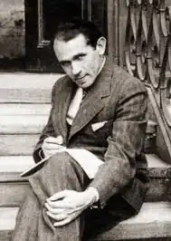
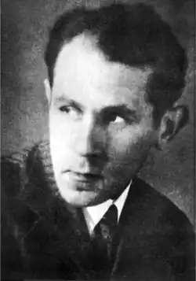
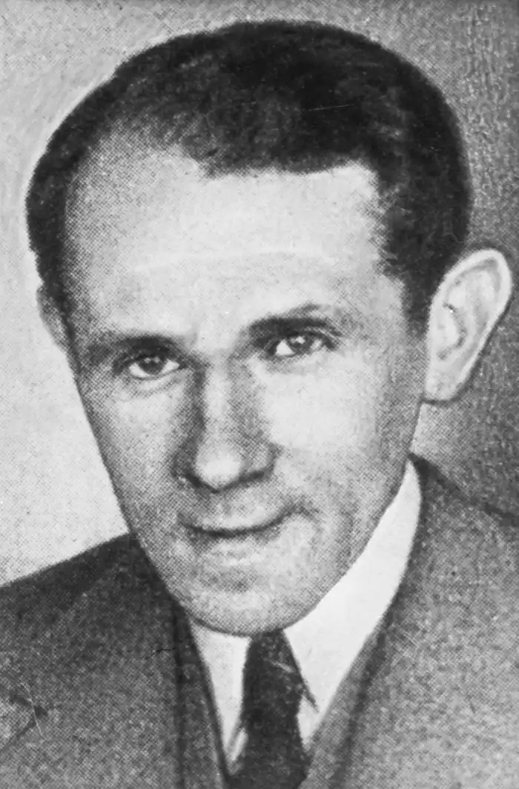

ШУЛЬЦ, Бруно (Schulz, Bruno — 12.07.1892, Дрогобич — 19.11.1942, там само) — польський письменник.Творчість Шульца, видатного польського письменника, художника і мислителя, лише зараз починає усвідомлюватися у масштабі, який відповідає його внеску у польську та світову культури XX ст. Майже у відриві від культурного середовища та впливів, в основному самостійно, він прийшов до тих ідей, які щойно зароджувалися у різних кінцях культурної Європи. Його доля є дивовижним прикладом духовного подвижництва, а масштаб творчості робить справжнім представником світової загальнолюдської культури.
Бруно Шульц, наймолодший син у сім'ї власника мануфактурної крамниці Якова Шульца та його дружини Генрієтти, народився у Дрогобичі, що був у той час глухою окраїною Австро-Угорщини. Реалії Дрогобича, його звивисті вулички, крамнички, гімназія, театр стануть для Шульца таким самим постійним джерелом художнього натхнення, як Вітебськ для М. Шагала чи Дублін для Дж. Джойса. У міфологічному образі Міста, наскрізного у його прозі, втілені конкретні прикмети Дрогобича, аж до картографічних подробиць, і водночас Місто — символічний простір, що має універсальні риси створеного Шульцем всесвіту. Дитинство письменника мало вирішальне значення для всього його подальшого життя. Воно стало однією із тем творчості і специфічним художнім ракурсом, що дозволив звернутися до першооснов життя. Будучи вже дорослим, в одному із листів він сам констатував: "Якби пощастило повернути розвиток назад, якоюсь кружною дорогою ще раз пробратися у дитинство, знову пережити його повноту і безмежність, — це стало би віднайденням "геніальної епохи", "месіанського часу", який обіцяють і яким клянуться всі міфології світу". У найближчому оточенні Шульца розмовляли сумішшю мов — німецькою, польською, російською і, ймовірно, ідиш. У домі домінували польська та німецька, отож і не дивно, що у роки зрілості йому були однаково близькі польська та німецька художні традиції. У роки навчання у Дрогобицькій гімназії ім. Франца Йосифа відбулася важлива подія — він подолав "недорікуватість" навколишнього середовища і віднайшов свою мову. Гімназію Шульц закінчив з особливими успіхами у малюванні та польській мові, яка відтоді стала його рідною. Отримавши рекомендацію для вступу в університет, він, попри те, за наполяганням батьків розпочав навчання на архітектурному відділі Львівського політехнічного інституту, яке перервала Перша світова війна.
У 1917 p., коли сім'я тимчасово замешкувала у Відні, Шульц декілька місяців відвідував заняття у Віденській академії красних мистецтв. Малювання стало основним фахом Шульца, у 1924 р. він влаштувався вчителем малювання у Дрогобицьку гімназію ім. В. Ягелли (Дрогобич на той час увійшов у склад Польщі). На початку 20-х pp. Шульц працював над циклом малюнків "Книга ідолопоклонництва", брав участь у кількох колективних експозиціях у Варшаві та Львові, пізніше влаштував персональну виставку у Трускавці. У середині 20-х pp. у Закопане Шульц зійшовся з письменником-початківцем В. Ріффом, а трохи згодом — з юним прозаїком Д. Фогелем. Листи до них, написані у формі розлогих прозаїчних фрагментів, він у майбутньому переробить і зробить основою своєї першої книжки "Цинамонові крамниці" ("Sklepy cynamo-nowe"). У 1933 p. під час чергового приїзду у Варшаву Шульц випадково познайомився з уже знаменитою письменницею З. Налковською, котра допомогла йому видати книгу. Дебют Шульца став майже літературною сенсацією. "Ліві" критики дорікали йому за "деструктивну тенденцію", "правих" "травмувало" його єврейство, але більшість розуміла, що у польській літературі з'явився своєрідний і талановитий письменник. У ті роки Шульц познайомився з провідними представниками молодшого літературного покоління — В. Гомбровичем, Ю. Тувімом, Т. Брезою. Його оповідання почали з'являтися у столичних журналах. У 1935 р. один із них ("Студіо") організував дискусію про художню манеру Шульца у формі відкритих листів до нього В. Гомбровича та С.І. Віткевича. Шульц скористався можливістю особисто сформулювати основи поетики "Цинамонових крамниць": "Я вважаю "Крамниці" автобіографічною повістю. Не лише тому, що вона написана від першої особи і що в ній можна виявити події та переживання дитинства автора. "Криниці" — автобіографія, чи, точніше, духовний родовід... оскільки в ньому показане духовне походження аж до тих глибин, де воно йде у міфологію, губиться у міфологічній маячні". Через рік у програмному есе "Міфологізація реальності" Шульц розвине ідеї поетики міфолоагізування і зробить її основою своєї теорії літературної творчості. Слово у Шульца — носій первинного міфу, у зв'язку з чим завдання поезії він вбачає у розкритті основ буття, що містяться у слові, у поверненні до джерел слова і життя. Після виходу "Цинамонових крамниць" Шульц пережив найдіяльніші роки свого життя: працював над другою книгою — "Санаторій під клепсидрою" ("Sanatorium pod klepsydra."), спільно зі своєю нареченою Юзефиною Шелінською, ймовірно, прагнучи заохотити її до літературної праці; перекладав "Процес" Ф. Кафки, з котрим його пізніше порівнюватимуть. Утім, історія стосунків із Юзефиною Шелінською, багаторічні заручини і, врешті, розрив, дивовижно схожі на роман Кафки із Ф. Бауер. У 1937 р. вийшов "Санаторій...", і ця подія завершила короткий період творчих успіхів і надій. Шульц намагався видати "Цинамонові крамниці" в Італії та Франції, організувати персональну художню виставку у Парижі, проте спроби виявилися невдалими. На початку 1939 р. у письменника розвинулася депресія, а 1 вересня Німеччина напала на Польщу, і період відносно спокійного життя закінчився: Дрогобич двічі переходив із рук до рук — спочатку його окупувала німецька армія, потім "визволила" радянська. У короткий період радянської влади Шульц устиг відчути її похмурий абсурд: його змусили намалювати портрет Й. Сталіна і велике полотно "Звільнення народу Західної України", а потім арештували і допитували в НКВС за використання у картині блакитного та жовтого кольорів, що, мовляв, було проявом українського націоналізму. У липні 1941р. Дрогобич захопили німці, й останні півтора роки свого життя Шульц, виснажений фізично і психічно, провів у гетто. 19 листопада 1942 р. він загинув на вулиці, застрілений офіцером СС. Художня спадщина Шульца невелика: окрім двох згаданих романів — "Цинамонові крамниці" та "Санаторій під клепсидрою", декілька статей, рецензій і незакінчених начерків; рукопис останнього роману "Месія" зник або лежить в архівах КДБ; картини олією знищено, крім однієї — "Зустріч", яка зберігається у Музеї літератури у Варшаві разом із частиною вцілілих малюнків. "Цинамонові крамниці" і "Санаторій під клепсидрою" складаються із розділів-оповідань і є, по суті, єдиною оповіддю зі спільним сюжетом і системою персонажів. Це історія сім'ї крамаря Якова, вигадника і дивака, яку розповідає його син, історія хвороби та смерті батька і дорослішання сина. Дія відбувається у маленькому галицькому містечку, але романи Шульца аж ніяк не є оповіддю про конкретний час і місце. Вони прочитуються як розгорнута метафора, якийсь есхатологічний апокриф про долю людства. Вихідним метатекстом для Шульца є Біблія, і водночас в оповіді прослідковуються закономірності побудови архаїчних міфів. Дія "Цинамонових крамниць", за властивим архаїчним міфам типом циклічного часу, розпочинається розділом "Серпень" і закінчується тринадцятим "несправжнім" місяцем, що трапився у "той особливий рік-виродок". Оповідь могла би розпочинатися з будь-якого сюжетного епізоду, і останній рядок роману "Кіт умивався на осонні" виконує кільцеву роль кінця і початку. Незважаючи на аномалію тринадцятого місяця, світ "Цинамонових крамниць" відносно стійкий завдяки міфологічному підґрунтю, що гарантує захист від хаосу та руйнування випадковими силами. Натомість композиція "Санаторію під клепсидрою" набуває іншої, лінійної спрямованості. Відбувається нагромадження незакономірних, виняткових явищ; хвороба батька, деміурга міфологічного світу, робить його ще більш дивним і катастрофічним, у гармонію старозаповітної єдності вриваються ознаки відчуження, незахищеності, самотності, відбувається руйнування міфу і його трансформація у кафкіанський антиміф. Час вироджується, вмирає головний герой і закінчується діалог між батьком і сином, на якому ґрунтувався створений письменником Універсум. Провідна тема обох романів — ініціація чи народження духовної людини — втілювалася через стосунки батька і сина. Природа буття, за Шульцем, діалогічна, й осягнення сином батька він розумів як осягнення істини і світу. Історичних катаклізмів, супутніх "сімейним" подіям у романах, початку війни і занепаду Імперії їхні герої майже не зауважують. "Війна з ким і за що?" — дивується Йосиф. Есхатологія у світі Шульца пов'язана не з крахом держав, а з кризою діалогу любові і відносин синівства із Богом. Релігійно-міфологічну цільність Шульц вважав єдиною противагою майбутньому трагічному існуванню роз'єднаних і знеособлених людей. Творчість Шульца стала відомою у світі у 70-х pp. минулого сторіччя, коли почали з'являтися переклади окремих оповідань у США, Франції, Італії, Угорщині, Чехословаччині й інших країнах, а згодом рецензії і більш серйозні дослідження та монографії. Рік його сторіччя — 1992 — був оголошений ЮНЕСКО міжнародним "роком Бруно Шульца".